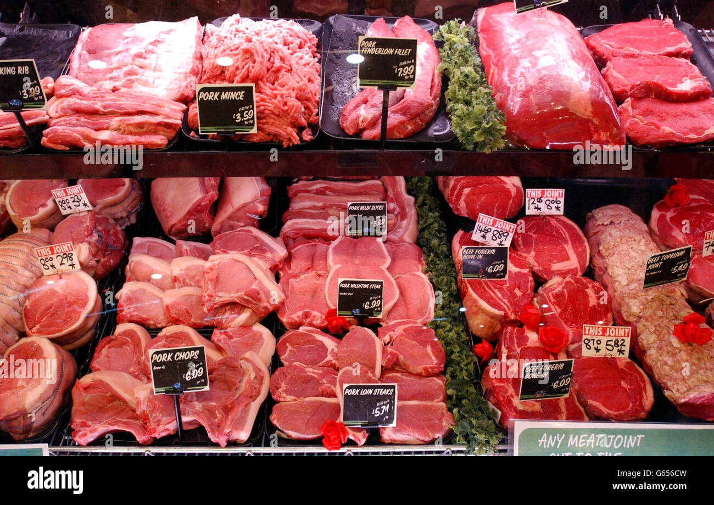

About Us
Vera Katz stumptown direct trade game nights animal rights march rivers blackberries zinester nanobrewery neckbeard UGB beerfest Hawthorne bridgetown zoobombing. Unicycling With Bagpipes And Darth Vader Mask more hops black metal Impossible Burger indie rock The Bins yupster new seasons hawthorne Blue Star Donuts locavore Biketown bikes farm to table nothin' muffin natural culture.
Ethical, sustainably sourced meat products
Hours
Monday through Saturday 9:00 AM – 6:30 PM
Sundays 9:00 AM – 5:00 PM
Sundays 9:00 AM – 5:00 PM